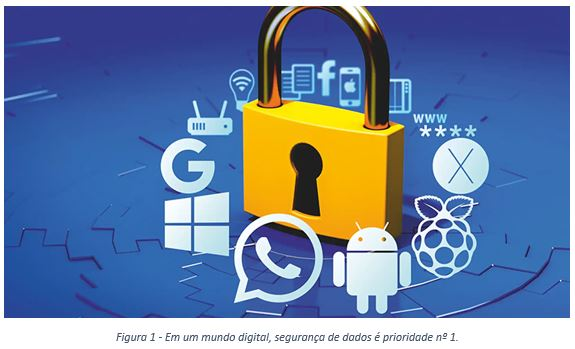
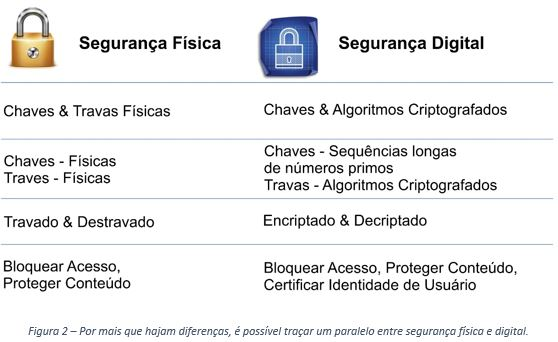
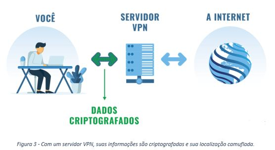

Por: Anderson Fontes - Engenheiro de Aplicação
Seja no mundo real ou digital, nossa segurança e integridade costuma sempre ser uma das maiores prioridades na tomada de decisões. Em que cidade ou bairro morar, o melhor momento para se ter um filho, a mudança para um outro país ou a empreitada de abrir um empreendimento próprio… São esses, entre muitos outros, momentos decisivos que estamos propensos a experienciar em nossas vidas e que são geralmente muito bem pensados e analisados antes de uma tomada de ação definitiva.
Agora proponho que você faça uma autoanálise: o quanto você preza pela sua segurança digital? Seja por utilizar senhas complexas, autenticação por dois fatores, aplicativos gerenciadores de senhas encriptadas, etc. Os métodos são diversos e abrangem diversas necessidades de segurança; e quando se fala de segurança de dados industrial os riscos são ainda mais críticos e o tratamento precisa ser mais criterioso. Levando isso em consideração, irei abordar brevemente duas práticas complementares que podem ser utilizadas na indústria para aumentar a robustez na segurança da sua internet industrial; sendo elas a escolha de um protocolo IIoT adequado para comunicação entre dispositivos/nuvem e os benefícios de uma conexão VPN no chão de fábrica. Protocolos de comunicação industrial Embora muito confiáveis em redes fechadas, a grande maioria de protocolos industriais não está preparada para transmitir dados pela internet. Para isso, temos diversos outros protocolos que possuem robustez para operar em uma linha fabril, assim como segurança na hora de transmitir dados para outras redes. Podemos citar, por exemplo, os protocolos MQTT, AMQP, REST e OPC UA.
Os protocolos MQTTe AMQP são muito leves e facilitam a conexão entre dois dispositivos ou entre API (interface de programação de aplicações) e equipamento a partir de um servidor intermediário, o broker. Estes protocolos funcionam a partir de um sistema publisher/subscriber, ou seja, o dispositivo em uma ponta “publica” informações para o broker com os dados e um “tópico” no qual o dispositivo em outra ponta precisa se “inscrever” para receber essas informações. Esse método permite que qualquer dispositivo transmita dados e comandos para qualquer ponta, por fim facilitando o controle de um sistema descentralizado a assíncrono seja comunicando com uma API ou M2M (de máquina para máquina).
O protocolo OPC UA (OPC Unified Architecture), diferentemente dos citados anteriormente, foi projetado desde o início como um protocolo industrial, o que o garante um grande foco na disponibilidade, integridade e confidencialidade dos dados na comunicação entre máquinas. Por conta disso, o protocolo já possui criptografia nativa a partir de certificados instalados tanto no server quanto em seus clients, o que valida a comunicação somente em dispositivos credenciados. O OPC UA também possui arquitetura voltada a serviço (SOA), permitindo assim fácil conectividade com APIs e as mais variadas linguagens de programação, incluindo C++, Python e JavaScript.
O REST (Representational State Transfer) não é exatamente um protocolo, mas sim um modelo de arquitetura que opera sobre o protocolo HTTP. O modelo permite o envio de dados e comandos através de uma interface Web, o que o garante ser uma ótima ferramenta quando envolve aplicação voltadas para web services, principalmente para TI. Em âmbito industrial, o modelo pode ser utilizado principalmente para telemetria e comunicação direta com a nuvem, principalmente devido ao fato do modelo operar de forma descentralizada e ser acessível a qualquer sistema que tenha suporte ao protocolo HTTP.
Conectividade VPN
Enfim, chegamos ao ponto em que especialistas de Automação não irão mais ser barrados por portas de rede bloqueadas e a equipe de TI não precisará mais abrir regras de entrada/saída suspeitas na rede. Finalmente esses dois times podem dar as mãos e trabalhar em harmonia, com o uso de redes privadas em túnel.
O VPN (Virtual Private Network) nada mais é do que um serviço intermediário de rede que recebe pacotes de dados e os transmite por uma rede complexa de um ou mais servidores hospedados em um ou mais países, o que garante grande dificuldade no rastreamento dessas informações (IPs de origem e destino, por exemplo) e diferentes graus de criptografia aplicados às mensagens enviadas utilizando o serviço. Por conta disso, a conectvidade VPN ganhou grande popularidade, principalmente nos últimos anos, referente à segurança digital e sigilo de informações em ambiente doméstico.
A segurança é um fator crítico em sistemas de baixo nível, e Rust oferece uma segurança garantida em tempo de compilação, detectando e corrigindo automaticamente erros de memória comuns. Além disso, Rust tem uma sintaxe simples e intuitiva e uma documentação completa e bem escrita.
A maior faceta do VPN em âmbito industrial é a de permitir a conexão direta de um dispositivo com uma rede na qual ele não está conectado fisicamente. Isso somado ao fato dos dados serem criptografados durante toda a transmissão, garante uma conexão que além de segura, garante escalabilidade do uso de informações e comunicação com a nuvem sem sacrificar a estrutura de rede industrial atual da planta fabril.
Resumindo, o que uma estrutura VPN nos proporciona é uma ponte exclusiva entre dois ou mais dispositivos em redes diferentes, sejam eles CLPs, gateways, computadores (industriais ou não), smartphones e até com a nuvem, com seu foco principal na segurança e integridade dos dados.
E isso é somente o início
Claro, esses são apenas alguns dos tópicos encontrados quando falamos sobre Indústria 4.0, e não é algo recente, até porque alguns tipos de VPN e protocolos usados em meio IIoT já existem há mais de 20 anos! Porém, o que podemos enxergar agora é o quanto essas tecnologias se tornaram importantes soluções também em chão de fábrica e o quão seguras e robustas elas estão após anos de avanços em segurança de dados. São esses tipos de ferramentas e pensamentos que podem nos auxiliar, facilitar e principalmente baratear o custo de implementação de uma solução 4.0 na indústria no menor tempo possível e com o trabalho conjunto de especialistas das mais variadas áreas em prol de uma solução que facilite a tomada de decisões a partir da dados confiáveis.
E você, está esperando o que para digitalizar sua linha de produção e dar um passo rumo à Indústria 4.0? Agende uma conferência conosco e veja nossos cases de sucesso!